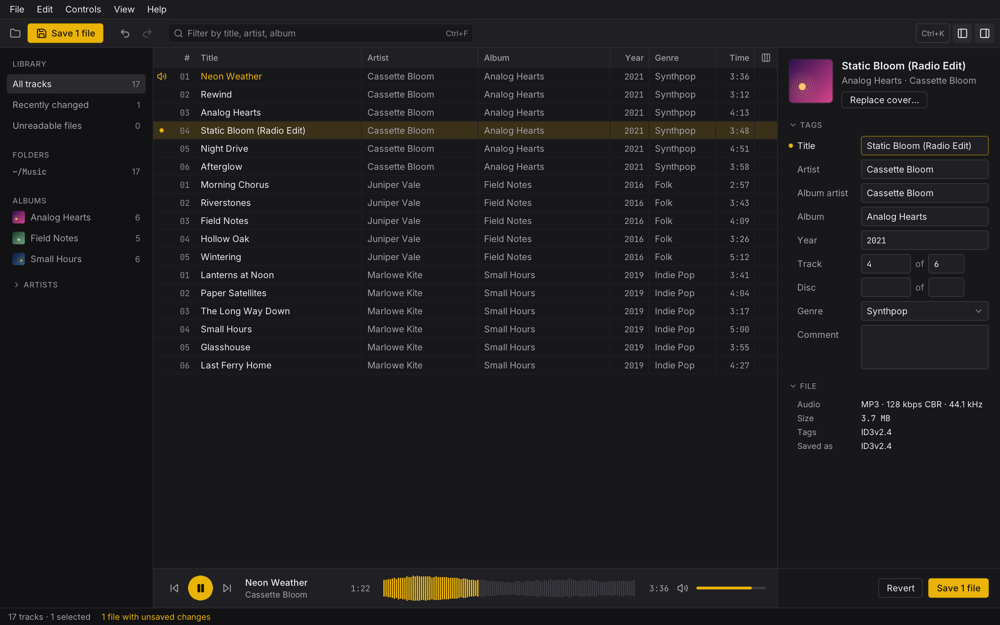

Library01
Your library, by album and artist
Open a folder or a few files, or drop them on the window. The sidebar sorts them into folders, albums and artists, every cover in view.
MP3 tag editor · macOS · Windows · Linux
Colophon edits the tags of your MP3 files: titles, artists, albums, track numbers, genres and covers. Open a folder, fix a whole album at once, and save when you are ready.
Latest version · free and open source · MIT

Open a folder or a few files, or drop them on the window. The sidebar sorts them into folders, albums and artists, every cover in view.
Select tracks and edit them together in the inspector, or right in the table. Values they do not share say so, and track numbers fill in at once.
Every edit waits, marked track by track, with undo and redo. Colophon points out a missing track number, an odd album artist, or a value ID3v1 would cut.
Play a track from the table and skip through its waveform, to be sure of the take before you name it.
| Tag | Read | Write |
|---|---|---|
| ID3v2.4 | yes | yes |
| ID3v2.3 | yes | yes |
| ID3v2.2 | yes | yes |
| ID3v1.1 | yes | yes |
| ID3v1.0 | yes | yes |
| APE | yes | kept as is |
ID3v2.4 or ID3v2.3 by default, ID3v1 kept, added or removed as you choose, APE tags left alone. Developer mode picks the version file by file and shows every frame.
The command palette finds any action by name, and each platform keeps the shortcuts it is used to. Light and dark themes follow your system, in English or French.
Colophon runs on your computer and talks to no server: no sign-in, no upload, no tracking.
Edits stay in Colophon until you save them, and quitting asks what to do with the ones left.
Free for macOS, Windows and Linux, with nothing to sign up for.
One disk image for Apple silicon and Intel. Not signed by Apple yet: the first time, open it from Privacy & Security.
Download .dmgAn installer for you alone, without administrator rights, or for everyone on the computer.
Download .exeAn AppImage that runs on most distributions: make it executable, then open it.
Download .AppImageOr build it from source: cargo build --release -p colophon